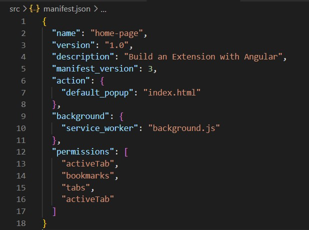
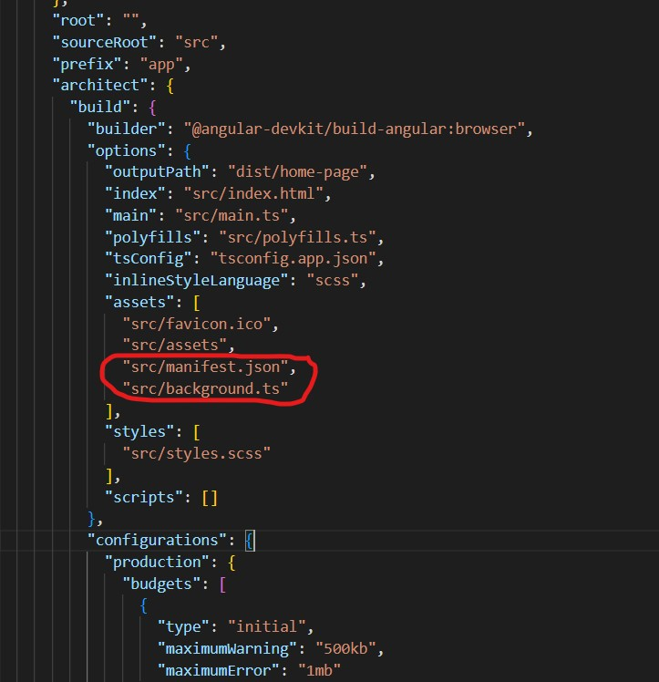
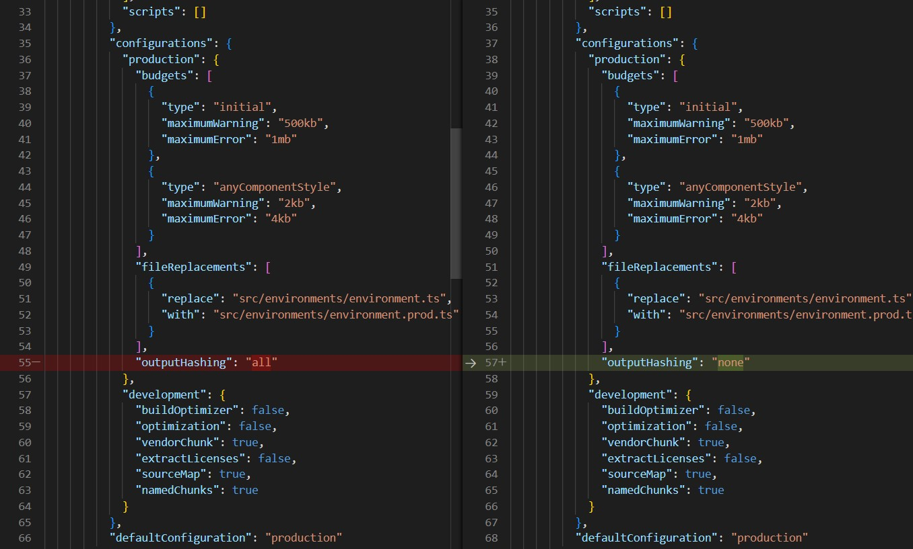
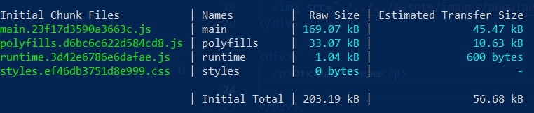
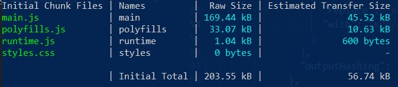
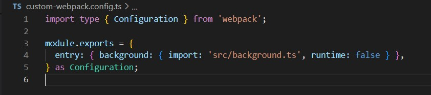
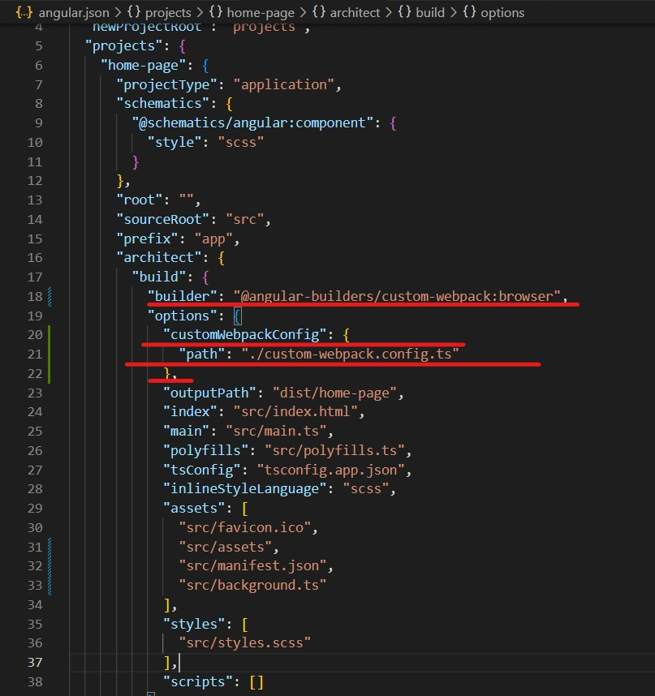
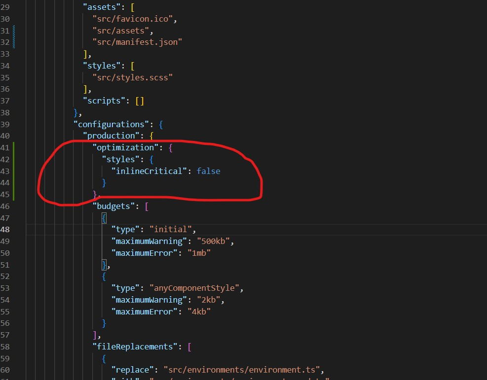

Создадим новый ангуляр проект
ng new home-page
Делаем очень важный импорт для chrome api
npm install --save @types/chrome
Добавляем manifest.json по пути "./src/.."
Добавляем background.ts по пути "./src/.."
Добавляем файлы background.ts и manifest.json в angular.json
Это нужно для того что бы поле билда проекта эти файлы попали в папку dist
Отключаем кэш
Без отключения
После отключения
Устанавливаем и настраиваем custom-webpack для background.ts
Это нужно что бы полсе билда код из background.ts перешел в background.js. Затем запустился вместе с отсальными ангуляр файлами
Устанавливаем custom-webpack
npm install --save @angular-builders/custom-webpack
Создаем файл custom-webpack.config.ts в ./app/..
Обновляем angular.json
Убираем ошибку со стилями
